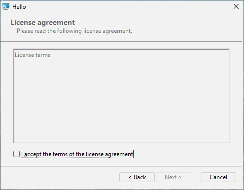
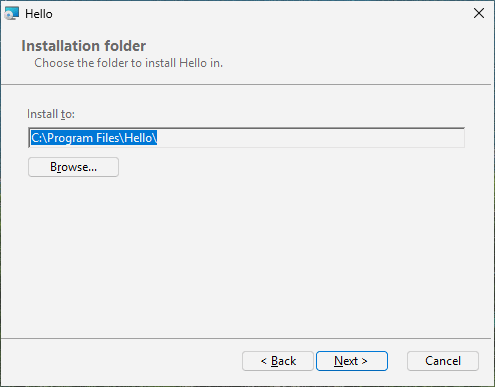
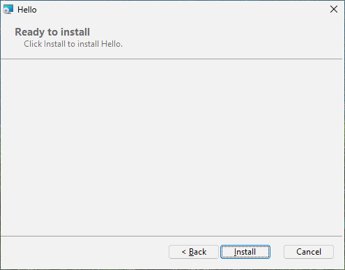
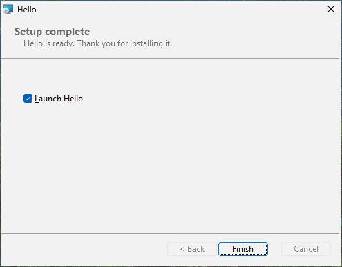
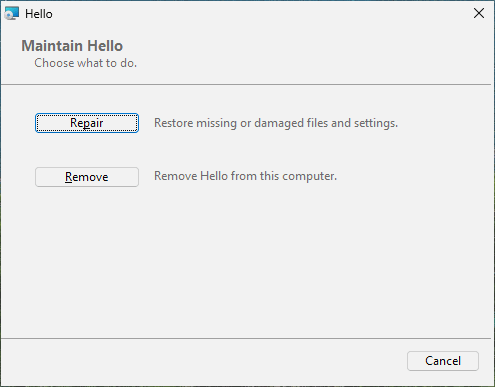

6 대화창, 약관, 그리고 프로그램 시작하기
목표: 페이지가 있는 설치 파일 - 환영, 사용자가 동의해야 하는 약관, 폴더 고르기, 진행, 완료 - 을 만들고, 끝에 Hello 를 시작하겠냐고 묻게 한다.
6.1 원본#
원본 옆에 LICENSE.txt 와 banner.bmp(약 493 x 58 픽셀 그림)가 있다.
# tutorial 06: hello.toml
format = 1
[package]
name = "Hello"
manufacturer = "Example Software"
version = "$(VERSION)"
arch = "x64"
upgrade-code = "{3F2A6C1D-8B4E-4F7A-9C2D-5E6F7A8B9C0D}"
ui = "installdir"
license = "LICENSE.txt"
[define]
VERSION = "1.4.0"
[ui]
banner = "banner.bmp"
launch = "file:Hello"
launch-args = "--first-run"
launch-checked = true
[ui-text.WelcomeText]
text = "This will install [ProductName] [ProductVersion]. Close Hello if it is running."
[ui-text.ExitText]
text = "[ProductName] is ready. Thank you for installing it."
[dir.INSTALLDIR]
path = "$(ProgramFiles)/Hello"
[file.Hello]
dir = "INSTALLDIR"
source = "dist/hello.exe"
[shortcut.StartMenu]
dir = "Programs"
name = "Hello"
target = "file:Hello"6.2 페이지 세트 고르기: ui#
[package] 의 ui 는 내장 대화창 세트 하나를 고른다:
ui | 설치할 때 | 설치 뒤 다시 실행할 때 |
|---|---|---|
| (없음) | Windows Installer 자체의 작은 진행 창만 | 같음 |
basic | 진행, 그다음 완료(또는 오류) | 진행, 완료 |
minimal | 환영, 약관(있으면), 진행, 완료 | 복구 또는 제거 |
installdir | 환영, 약관, 설치 폴더(폴더 찾아보기 포함), 준비, 진행, 완료 | 복구 또는 제거 |
features | installdir 과 같고, 기능 트리와 그것이 필요로 하는 디스크 공간이 더해진다(8장) | 복구, 변경, 제거 |
어느 세트에나 무슨 일이 생겼을 때 Windows 가 필요로 하는 페이지도 있다: "정말 취소하겠습니까?", 오류 메시지, "이 프로그램들이 바꿔야 할 파일을 쓰고 있습니다"(사용 중인 파일), "디스크 공간 부족". 대화창이 있는 패키지도 /qn 으로 조용히 설치된다: 모든 페이지는 기본값이 있는 값만 모으기 때문이다.
6.3 약관: license#
license = "LICENSE.txt" 는 환영 페이지 뒤에 약관 페이지를 더한다. "I accept the terms of the license agreement"(사용권 계약에 동의합니다)에 표시하기 전에는 다음 단추가 꺼져 있다. 파일은:
.txt또는.md- 평문으로 보인다. 한국어, 다른 글자, 이모지도 그대로다..rtf- 글꼴과 서식을 그대로 보인다(워드패드나 Word 로 만든다).
약관 글은 빌드할 때 패키지 안에 저장되므로 사용자에게 그 파일이 필요하지 않다.
6.4 설치 폴더#
installdir 이나 features 에서는 설치 폴더와, 폴더 찾아보기를 여는 변경 단추가 있는 페이지가 보인다. 사용자가 고른 폴더가 INSTALLDIR 이 되고, INSTALLDIR 위에 쌓은 dir 은 모두 함께 옮겨 간다. 다른 dir 을 바꾸게 하려면 이름을 댄다: [ui] 의 install-dir = "AppDir". 명령줄에서는 폴더를 속성으로 준다:
msiexec /i hello.msi INSTALLDIR="D:\Tools\Hello"6.5 위쪽의 그림: banner#
banner = "banner.bmp" 는 안쪽 페이지마다 위쪽 띠에 그림을 넣는다(Windows Installer 는 BMP 를 그린다. 약 493 x 58 픽셀). 없으면 띠는 그냥 흰색이다.
6.6 내 말로: [ui-text.ID]#
내장 페이지의 모든 글에는 ID 가 있고 [ui-text.ID] 가 하나를 바꾼다. ID 목록은 참조 부의 대화창에 있다. WelcomeText 와 ExitText 는 첫 페이지와 마지막 페이지의 문장이다. 글은 서식 문자열이다: [ProductName], [ProductVersion], [Manufacturer] 는 바뀌고, 대괄호 자체는 [\[] 로 쓴다. 단추 글에서 & 는 Alt 와 함께 쓰는 글자를 표시한다: &Next 는 Alt+N 이다.
6.7 끝에 프로그램 시작하기: launch#
launch = "file:Hello" 는 완료 페이지에 "Launch Hello"(Hello 실행) 확인란을 넣는다(launch-checked = false 가 아니면 표시된 채로). launch-args 는 프로그램의 인자다. 표시되어 있으면 마침 단추가 Hello 를 시작한다 - 설치 파일의 관리자 권한이 아니라 설치를 실행한 사용자의 권한으로 - 첫 설치나 업그레이드 뒤에만이고, 복구나 제거 뒤에는 아니며, 조용한 설치에서는 절대 아니다.
6.8 해 보기#
hello.msi 를 두 번 누른다: 환영(내 문구와 배너), 약관(확인란을 표시할 때까지 다음이 회색), 설치 폴더, 준비, 진행, "Launch Hello" 가 표시된 완료. 설치한 뒤 다시 실행하면 복구와 제거를 권하는 페이지가 나온다.
![환영: [ui-text.WelcomeText] 의 글](img/ch06-welcome.png)
[ui-text.WelcomeText] 의 글




이 장의 원본에는 한국어가 없으므로 페이지는 영어다. 한국어 페이지는 7장에서 더한다.
6.9 안에서 무슨 일이 일어났나#
대화창이 있는 패키지는 그것을 표로 지닌다 - Dialog, Control, ControlEvent 등 - 이 표들이 모든 창, 단추, 글 상자를 위치와 눌렀을 때 일어나는 일과 함께 기술한다. rubrapack 은 내장 세트에서 이것을 쓴다:
C:\work\hello> rubrapack inspect hello.msi Dialog
...
RpBrowseDlg RpCancelDlg RpErrorDlg RpExitDlg RpFatalDlg RpInstallDirDlg RpLicenseDlg
RpMaintenanceDlg RpOutOfDiskDlg RpProgressDlg RpReadyDlg RpUserExitDlg RpWelcomeDlg FilesInUse(여기서는 첫 열만 보였다.) InstallUISequence 표는 페이지가 언제 나오는지 말한다:
RpWelcomeDlg NOT Installed 1230
RpMaintenanceDlg Installed AND NOT RESUME AND NOT Preselected 1240
RpProgressDlg 1280
RpExitDlg -1
RpUserExitDlg -2
RpFatalDlg -3가운데 열은 조건이다: 환영 페이지는 제품이 아직 설치되지 않았을 때만, 유지 관리 페이지는 설치되어 있을 때 나온다. 음수는 특별하다: 성공한 끝(-1), 사용자가 취소한 끝(-2), 실패한 끝(-3)에 보이는 페이지다. 9장에서 내 조건을 쓴다.